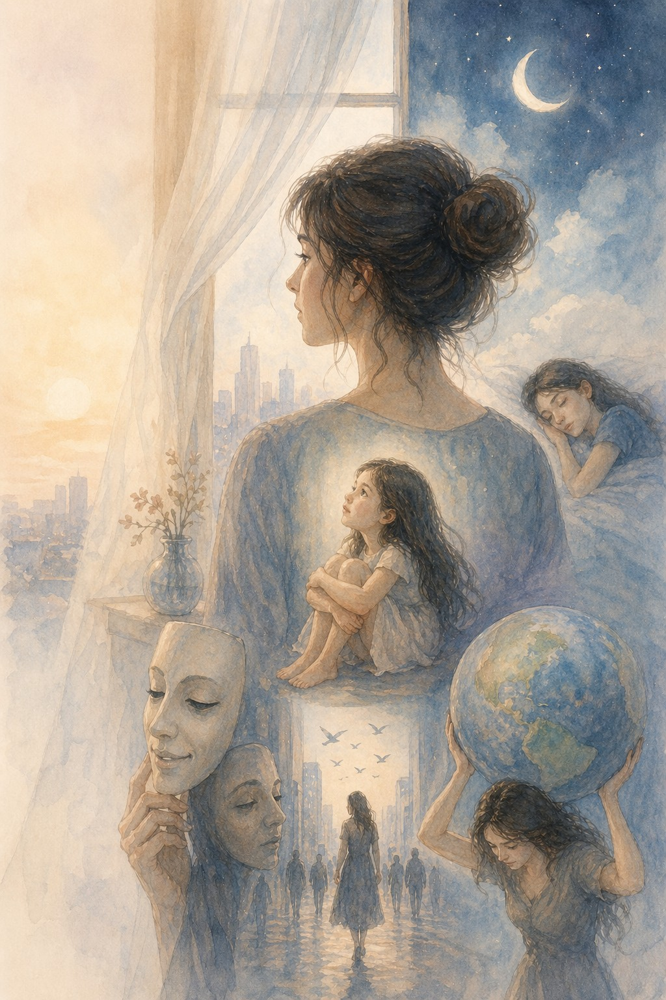

יש רגעים
שאני עומדת מול העולם
כמו חלון בלי וילון.
רואה הכול,
אבל לא בטוחה שמישהו
רואה אותי.
אז אני אוספת את עצמי
לצורה חזקה,
שלא תבריח אף אחד.
אבל בפנים
יש ילדה קטנה
שמחכה שמישהו
ישים לב
שהיא עדיין שם.
יש לילות
שאני מניחה את הראש
על הכר של עצמי,
ומקשיבה לשקט
שמספר לי אמת
שאיש לא שומע:
כמה אני מתאמצת
להיות חזקה,
וכמה אני רק רוצה
שמישהו יראה
שאני גם רכה.
ויש ימים
שאני הולכת ביניהם
כמו צל שקוף,
מחייכת במקום הנכון,
מדברת בקול יציב,
אבל בפנים
משהו קטן בי
מבקש שיראו
כמה אני מתאמצת
להחזיק את העולם
שלא ייפול לי מהידיים.